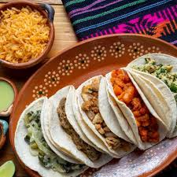

descripcion

El más común consiste en una tortilla, generalmente de maíz, rellena de un guiso, acompañado con cebolla, cilantro picado y limón, así como una buena salsa.
mision
la mision es que nosotros podamos vender bastantes tacos y tener un buen negocio
vision

Nuestra visión es ser una empresa de clase mundial Y líder en la producción de Platillos de la Gastronomía Mexicana,con la firme convicción de preservar la eficiencia en nuestro “SERVICIO, CALIDAD Y SABOR”, en todos y cada uno de los productos que ofrecemos, fortaleciendo de esta forma a la Gastronomía Mexicana, dejando satisfechos a nuestros clientes nacionales como internacionales, ya que manejamos altos estándares de higiene y servicio.